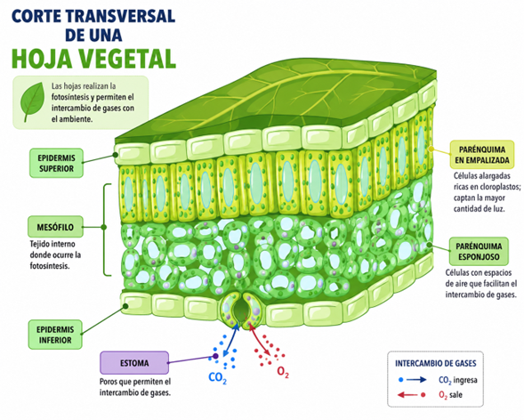
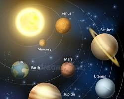

Fase 2: Prompts Educativos con IA Generativa
Introducción a la IA en Educación
En esta fase se trabajó con herramientas de inteligencia artificial generativa para diseñar prompts con intención pedagógica clara. El objetivo fue aprender a estructurar instrucciones precisas que generen contenido educativo útil, contextualizado y alineado con objetivos de aprendizaje específicos.
🔑 Elementos de un Prompt Educativo Efectivo
- Role: Definir el rol que debe asumir la IA (docente, diseñador instruccional, etc.)
- Audiencia: Especificar el nivel educativo y características de los estudiantes
- Objetivo: Clarificar qué se espera lograr con el contenido generado
- Formato: Indicar la estructura deseada (tabla, lista, guion, etc.)
- Tono: Establecer el estilo comunicativo (formal, cercano, motivador)
- Criterios: Definir parámetros de evaluación pedagógica
🛠️ Herramientas Utilizadas
ChatGPT
Generación de contenidos, adaptación de materiales y creación de actividades interactivas.
Claude
Análisis de textos, generación de preguntas de evaluación y diseño de secuencias didácticas.
Prompt 1: Teoría de la Relatividad para Niños
📝 Prompt Utilizado:
✨ Resultado Generado:
En una noche brillante, Sofía viajaba en una nave espacial junto a su gato Cosmo.
Mientras observaban las estrellas, la nave comenzó a ir cada vez más rápido.
—¡Guau! —dijo Sofía—. Parece que el tiempo pasa diferente aquí.
Cosmo movió la cola y respondió:
—Eso lo descubrió un científico llamado Albert Einstein. Él imaginó que el tiempo y el espacio son como una gran manta elástica.
Sofía puso una pelota sobre una manta y vio cómo se hundía.
—¡Entonces los planetas hacen huequitos en la manta! —dijo emocionada.
—Exacto —contestó Cosmo—. Y cuando algo viaja muy rápido, como nuestra nave, el tiempo puede pasar más lento para quienes viajan dentro.
Sofía abrió mucho los ojos.
—¿Entonces si viajamos muchísimo tiempo, al volver a casa nuestros amigos serían más viejos?
—¡Así es! —maulló Cosmo—. Eso es parte de la Teoría de la Relatividad.
Sofía sonrió mirando las estrellas. Ahora entendía que el universo no era solo enorme... también estaba lleno de secretos sorprendentes.
Prompt 2: Infografía sobre Contenidos Multimediales
📝 Prompt Utilizado:
✨ Resultado - Estructura de la Infografía:
Sección 1: La Arquitectura de la Idea
Ilustración: Plano digital con cerebro y engranaje interconectados
Texto: Antes de programar, define tu audiencia y objetivos. El guion y el storyboard son el código fuente que estructura la lógica de tu proyecto multimedial.
Interactividad: Efecto Hover - Al pasar el cursor, se revela un botón para descargar plantilla de Storyboard en PDF.
Sección 2: Los Activos de Información (Assets)
Ilustración: Repositorio Git con iconos de audio, video y texto
Texto: El contenido es el rey: combina texto, imágenes vectoriales, audio y video optimizados. Recuerda usar formatos abiertos y compresión adecuada.
Interactividad: Pestañas con Clic - Al pulsar cada tipo de asset, se despliegan los formatos ideales (WebP, MP4, AAC).
Sección 3: La Ley de Mayer (Diseño Cognitivo)
Ilustración: Dos pantallas comparativas: limpia vs saturada
Texto: Las personas aprenden mejor con palabras e imágenes combinadas, evitando la sobrecarga cognitiva. Menos es más velocidad de procesamiento.
Interactividad: Botón de dato curioso con el "Efecto de Redundancia" explicado en GIF animado.
Sección 4: Entornos de Desarrollo e Integración
Ilustración: Ecosistema de pantallas interconectadas (Móvil, Web, TV)
Texto: Integra tus elementos usando herramientas de autor o código limpio. Asegúrate de que sea responsive, accesible e intuitivo.
Interactividad: Hotspots - Al hacer clic en cada pantalla, se abre un mini-video de 30 segundos.
Pregunta de Reflexión Final:
Prompt 3: Historia de Colombia en Flashcards
📝 Prompt Utilizado:
✨ Flashcards Generadas:
📌 Tarjeta 1: La Época Indígena (Antes de 1492)
Pregunta: ¿Quiénes vivían en Colombia antes de la llegada de los españoles?
Respuesta:
- El territorio estaba habitado por muchas comunidades indígenas.
- Las dos familias más grandes: Muiscas (centro) y Taironas (Sierra Nevada).
- Eran excelentes agricultores, tejedores y orfebres.
📌 Tarjeta 2: La Conquista y Colonia (1492-1810)
Pregunta: ¿Qué pasó cuando llegaron los españoles?
Respuesta:
- Llegaron buscando oro y tierras, fundaron ciudades como Santa Marta y Cartagena.
- Se mezclaron las culturas indígenas, españolas y africanas.
📌 Tarjeta 3: El Grito de Independencia (20 de julio de 1810)
Pregunta: ¿Qué celebramos el 20 de julio?
Respuesta:
- El Grito de Independencia usando el Florero de Llorente como excusa.
- Los criollos ya no querían seguir las órdenes del Rey de España.
📌 Tarjeta 4: La Batalla de Boyacá (7 de agosto de 1819)
Pregunta: ¿Cómo se logró la independencia definitiva?
Respuesta:
- Campaña Libertadora de Simón Bolívar y Santander.
- Derrotaron al ejército español en el Puente de Boyacá.
📌 Tarjeta 5: La Constitución de 1991
Pregunta: ¿Cuál es la ley más importante que nos rige hoy?
Respuesta:
- Incluyó los Derechos Humanos y protegió la diversidad étnica.
- Creó la tutela para defender a los ciudadanos.
Prompt 4: Quiz de Biología con Retos
📝 Prompt Utilizado:
✨ Algunos Retos Generados:
🔍 Reto 1: El Detective de las Hojas
Tres plantas diferentes en zonas distintas. ¿Cuál vive en el desierto, cuál en la selva y cuál en la montaña? Justifica según la forma de sus hojas.
Reto 2: El Misterio del Pico del Pinzón
Si solo sobreviven árboles con semillas duras, ¿qué pinzón sobrevivirá: el de pico largo y fino, el de pico grueso tipo cascanueces, o el de pico plano?
Reto 3: Diseña un Supercamuflaje
Si tuvieras que dibujar un gecko para que nadie lo vea en un árbol, ¿de qué color sería y qué forma tendría su cola?
🌱 Reto 4: El Mapa del Tesoro de la Fotosíntesis
Si una planta es una fábrica, ¿por dónde entra el agua, la luz y el CO₂? ¿Por dónde sale el oxígeno?
🐺 Reto 5: La Paradoja del Lobo y el Ciervo
Si quitamos los 5 lobos de un bosque con 100 ciervos, ¿qué pasará con el pasto y la salud de los ciervos dos años después?
🐻 Reto 6: El Oso Polar en la Selva
Identifica tres problemas que tendría un oso polar con pelaje grueso y grasa de 10cm si termina en el Amazonas.
Prompts 5-6: La Revolución Francesa
📝 Prompt 5 - Guía de Estudio:
📝 Prompt 6 - Línea del Tiempo:
✨ Contenido Generado - Puntos Clave:
Causas Principales:
- Desigualdad social: El Tercer Estado pagaba impuestos, nobleza y clero no.
- Crisis económica: Deudas por guerras, escasez de alimentos, precio del pan aumentó.
- Monarquía absoluta: Luis XVI tenía poder total sin consultar al pueblo.
- Ideas de la Ilustración: Voltaire y Rousseau defendían libertad, igualdad y derechos humanos.
Eventos Clave:
- 1789: Toma de la Bastilla (14 de julio) - Inicio oficial.
- Declaración de Derechos del Hombre: Libertad, igualdad ante la ley.
- 1793: Ejecución de Luis XVI, fin de la monarquía.
- Reinado del Terror: Liderado por Robespierre.
- 1799: Ascenso de Napoleón Bonaparte, fin de la Revolución.
Consecuencias:
- Fin de la monarquía absoluta, surgimiento de repúblicas.
- Desaparición de privilegios de nobleza y clero.
- Expansión de ideas democráticas a Europa y América.
Prompts 7-8: Generación de Imágenes Educativas
📝 Prompt 7 - Anatomía Vegetal:
📝 Prompt 8 - Sistema Solar:

Corte Transversal de Hoja
Epidermis, Mesófilo y Estomas

Sistema Solar 3D
Planetas orbitando el Sol
💡 Estos prompts están diseñados para generadores de imágenes como DALL-E, Midjourney o Stable Diffusion
Reflexión sobre el Uso de IA en Educación
Estos prompts demuestran que la inteligencia artificial generativa puede ser una herramienta poderosa para:
- Adaptar contenidos complejos a diferentes niveles educativos (como explicar la relatividad a niños de 10 años).
- Diseñar materiales interactivos con enfoque pedagógico estructurado.
- Crear recursos de evaluación que fomenten el pensamiento crítico.
- Generar contenido visual que apoye el aprendizaje multimodal.
Conclusión: La IA no reemplaza al docente, pero amplifica su capacidad para crear materiales educativos personalizados, diversos y contextualizados cuando se usa con criterio pedagógico claro.